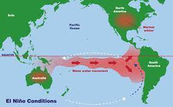
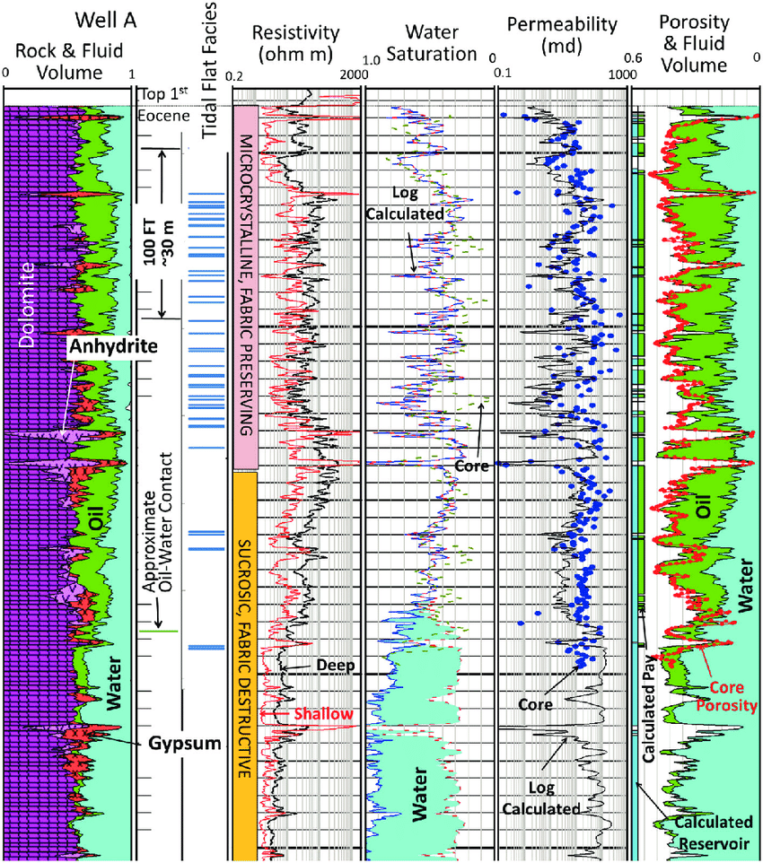
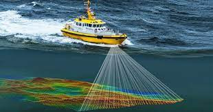
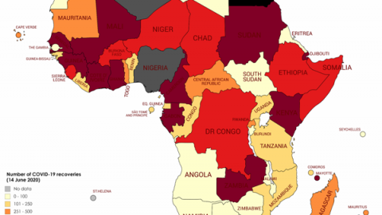

El-Nino Prediction
El-Nino is the warm phase of El Nino Southern Oscillation (ENSO), it is an irregular ocean and climate pattern that occurs every 3 to 7 years and lasts for about 9 to 12 months. El-Nino occurs in the Equatorial Pacific region and has global impacts on weather patterns. Analyzing El Niño data and predicting its occurrence can help in understanding and preparing for its effects. In this report, we will analyze El-Niño data using machine learning models for predicting weather patterns.
Twitter Scrapping
The analysis of ASUU tweets with data scraped from Twitter using the snscrape Python library. A total of 5,000 tweets were collected for analysis.

Well-Log Analysis
Well logs provide essential data about the properties of rocks, fluids, and their spatial distribution, enabling geoscientists to make informed decisions during oil and gas exploration, reservoir characterization, and geological modeling. This report presents an analysis of well log data obtained from five datasets.
SportStat on SQL
Given a dataset containing 120 years of Olympic data, the problem at hand is to analyze Olympic
athlete data and develop a predictive model to forecast the likelihood of winning a medal in future
Olympic Games. The Olympic Athletes Analysis project aims to analyze the performance of athletes in modern Olympic
games and offer a tool for predicting medal outcomes, thereby assisting stakeholders, including athletes,
coaches, and sports enthusiasts, in making informed decisions and setting realistic expectations for future
Olympic events

Bathymetry
Aenean ornare velit lacus, ac varius enim lorem ullamcorper dolore. Proin aliquam facilisis ante interdum. Sed nulla amet lorem feugiat tempus aliquam.

Covid Dosage Distribution in West Africa

{kind=link}